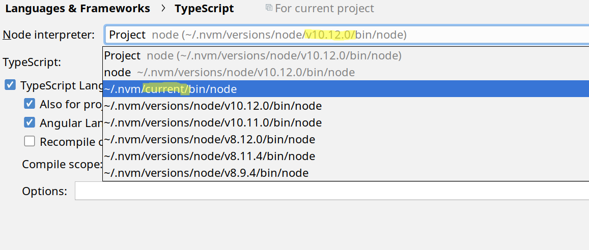
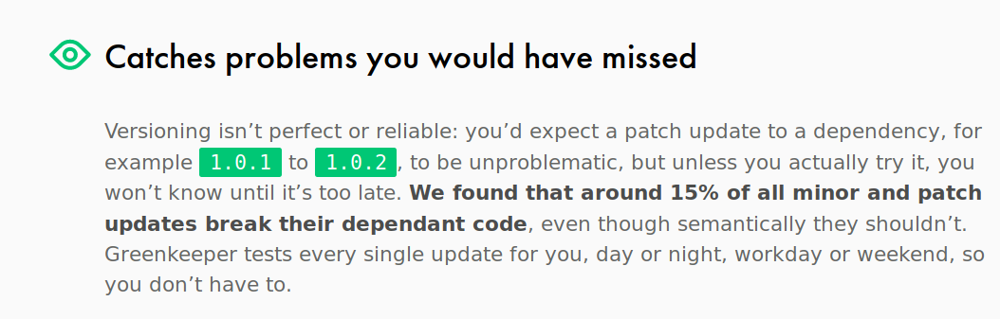
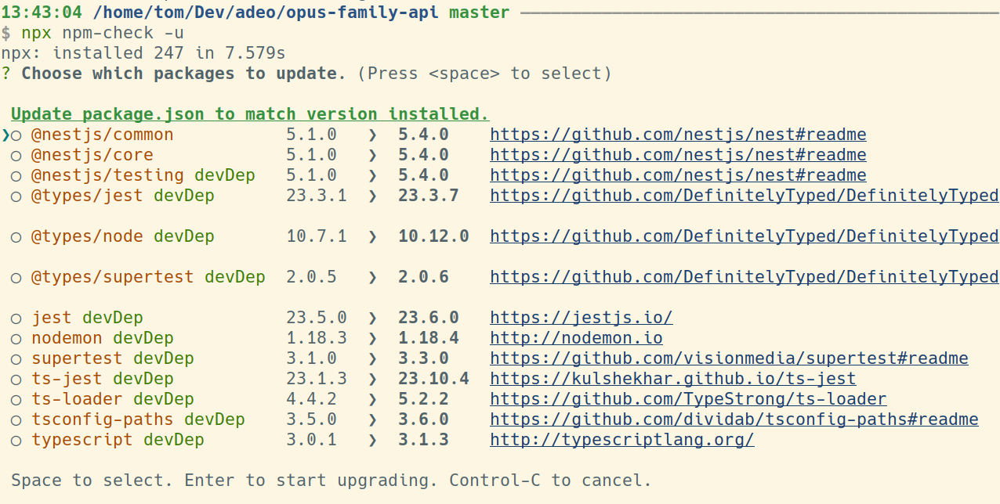
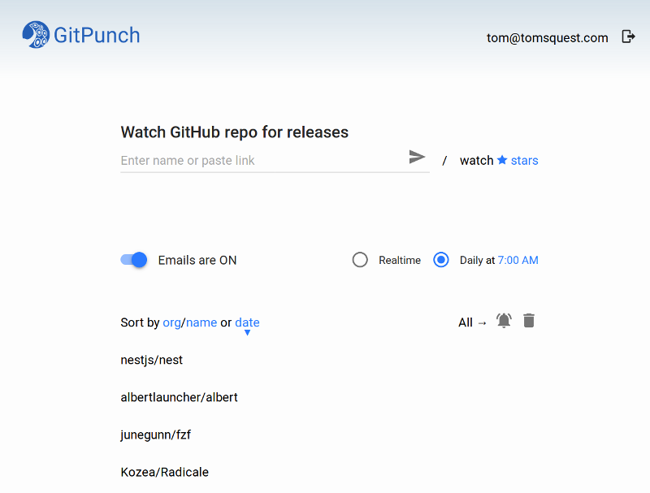

Problem: When configuring Node/Typescript, the node path is version-dependent

Problem: When configuring Node/Typescript, the node path is version-dependent
Solution (with NVM): $ export NVM_SYMLINK_CURRENT=true links current node version in ~/.nvm/current
Problem: Installing locally can differ from elsewhere (even with package-lock.json)
Version range are problematic: "rxjs": "^6.2.2"

Problem: Installing locally can differ from elsewhere (even with package-lock.json)
Solution: $ npm install --save-exact ... or -E
Better solution: Always exact: $ npm config set save-exact true
Problem: Install package only using package-lock.json without resolving and updating version ranges.
Problem: Install package only using package-lock.json without resolving and updating version ranges.
Solution: $ npm ci
↗ Speed (on CI and locally)
➕ Avoid dirty-ing the package-lock.json
Problem: Polluting the global node_modules with global packages: nest-cli, create-react-apps (= hundreds of packages)
Problem: Polluting the global node_modules with global packages: nest-cli, create-react-apps (= hundreds of packages)
Solution: npx runs a package without installing it (or find it locally in node_modules)
$ npx cleaver
Problem: Finding packages with security flaws
Problem: Finding packages with security flaws
Solution: $ npm audit, $ npm audit fix
➕ Fails the build given integrated it in CI
？ Scheduled build
Problem: Updating dependency and finding the one that breaks the code
Problem: Updating dependency and finding the one that breaks the code
Solution: $ npx updr update one update, then run the tests, then repeat
Solution: $ npx npm-check -u show a pretty menu of updates

Problem: Be notified of updates
Problem: Be notified of updates
Solution: evaluates Gitpunch.com
